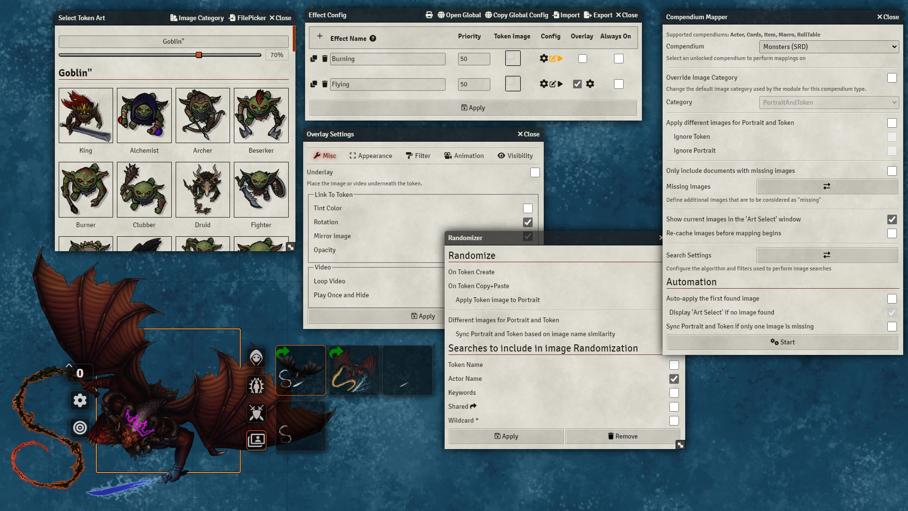

Token Variant Art
Improves management of Token art in-session and during prep.
This module searches a customisable list of directories and makes found art available through vairous convenient means such as pop-ups and a new Token HUD button.
Main features include:
- Sourcing images from local folders, rolltables, Imgur galleries, and s3 buckets
- Pop-ups on Actor/Token create to select images found based on Actor/Token name
- Overlaying images/videos on top or bellow the token
- Sharing specific art with players through the Token HUD allowing them to switch out their token art on the fly
- Displaying different images for the same token for each user
- Image filtering based on identifiers e.g. when selecting a portrait only showing images containing 'PRT': Bob[PRT].png, Tom[PRT].png
- Wildcard images shown in the Token HUD
- Aided and/or automatic mapping of images to actor compendiums
- Assigning art to status effects and Visibility/Combat states, updating tokens once conditions such as 'Dead' and 'Paralysis' have been applied
- Assigning custom token configuration (token scale, vision, name etc.) to images which are applied upon image selection through the Token HUD
For the comprehensive list of settings and features checkout the module's wiki [here]